1 · Cytopenias and Hemochromatosis
Lecture 46 · Matt Ward, DMSc, MBA, PA-C (“Modified and presented by”) · Thursday 12 November 2026, 1–4 PM
Instructional Objectives
HEMATOLOGY — CYTOPENIAS AND HEMOCHROMATOSIS — Matt Ward, DMSc, MBA, PA-C
- Compare and contrast the etiologies, epidemiology, risk factors, clinical manifestations, differential diagnosis, diagnostic testing (including ordering and interpretation), management (acute and chronic, including applicable rehabilitative and palliative care), appropriate referrals, patient education, and prognosis of the following anemias: 2. Anemia due to deficient production of red blood cells 3. Iron deficiency 4. Anemia of chronic disease 5. Sideroblastic anemia 6. Megaloblastic anemia 7. Aplastic anemia 8. Anemia due to renal failure
- Compare and contrast the etiologies, epidemiology, risk factors, clinical manifestations, differential diagnosis, diagnostic testing (including ordering and interpretation), management (acute and chronic, including applicable rehabilitative and palliative care), appropriate referrals, patient education, and prognosis of the following anemias and hemochromatosis: 10. Anemia due to increased destruction of red blood cells 11. Sickle cell anemia 12. Thalassemia 13. G6PD (glucose-6-phosphate dehydrogenase) deficiency 14. Autoimmune hemolytic anemias 15. Hemochromatosis: primary and secondary
- Compare and contrast the etiologies, epidemiology, risk factors, clinical manifestations, differential diagnosis, diagnostic testing (including ordering and interpretation), management (acute and chronic, including applicable rehabilitative and palliative care), appropriate referrals, patient education, and prognosis for leukopenia
- Identify medical care strategies for cytopenias and hemochromatosis in the lecture topic list for the following populations. 1. infants 2. child 3. adolescent 4. adult 5. elderly
Quoted as the syllabus prints it (CMS syllabus pages 20–21), its own numbering kept: it prints the first two objectives as “1.” and “9.” with their disease lists numbered 2–8 and 10–15, then the leukopenia and population objectives as “c.” and “d.”, the populations restarting at 1 (the leading “1.” and “9.” are dropped here). The guide follows the deck’s order, which takes leukopenia before the hemolytic anemias: objective 1 in 1.1–1.13 (the approach and indices 1.1; iron deficiency 1.2–1.4; chronic disease 1.5; sideroblastic 1.6 with lead poisoning 1.7; megaloblastic, folate and B12 1.8–1.11; renal failure 1.12; aplastic 1.13); objective 3 (leukopenia) in 1.14; objective 2 in 1.15–1.23 (hemolysis 1.15–1.16; autoimmune 1.17; G6PD 1.18; thalassemia 1.19; sickle cell 1.20–1.22; hemochromatosis 1.23); objective 4 in 1.24, with each disease’s education, referral and prognosis also in 1.24.
What Prof. Ward stressed (live recording, Thursday 12 November; three parts, about 2 hours 14 minutes; the tape starts a few minutes in, during iron deficiency). He flagged these slides out loud; each is marked with a gold star where it is taught below.
- Iron deficiency diagnosis (slide 15): “All right, you guys want to know this slide here?” Microcytosis, hypochromia, low ferritin and transferrin saturation, high total iron-binding capacity.
- Anemia of chronic disease mechanism (slide 23): “Want to pay attention to this slide?” Interleukin 6 raises hepcidin.
- Homocysteine and methylmalonic acid (slide 47): “This slide is definitely one that you guys want to pay attention to.” Methylmalonic acid is for B12 only, not folate.
- Aplastic anemia treatment (slide 58): “All right, be familiar with this slide here.”
- Genetic causes of hemolysis (slide 75): “Be familiar with this slide.” The upper smear shows spherocytes.
- G6PD deficiency (slides 77–78): “Be familiar with Heinz bodies, what they are, what they represent,” and that the hemolysis is both intravascular and extravascular. Bite cells are in the left image, Heinz bodies in the right.
- Thalassemia labs (slide 88): “Be familiar with our lab testing,” then “Did I tell you guys to pay attention to slide 88?”
- Acute chest syndrome (slide 94): “Be familiar with our treatments,” and “A chest x-ray is the first imaging study if you’re suspecting acute chest syndrome.”
- Sickle cell management (slide 98): “Be familiar with the management here.”
- Hemochromatosis treatment (slide 104): “Be familiar with treatments here.” Therapeutic phlebotomy.
- The lifespan slide (slide 105): “I want to be familiar with this slide, too.”
- Throughout iron deficiency: replace the iron and “still have to correct the underlying cause.”
- One drug he played down: luspatercept (slide 33), “Sorry, don’t know that drug.”
What the slides themselves stress (bold, asterisks, underline, the green arrow). His rule for his tests: you are tested on what is on the slide.
- Chronic blood loss is the “*Most common cause of iron deficiency anemia in adults*” (bold, between asterisks; slide 10).
- Asterisks on three iron deficiency findings: nail bed changes (koilonychia, pictured), cheilosis, Plummer-Vinson syndrome (slide 12).
- Ferritin and, to a lesser degree, transferrin are acute phase reactants (bold; slide 14).
- Ferrous sulfate (bold) and its side effect “especially constipation” (bold and underlined; slide 18); the orange juice preparation line is bold (slide 19).
- Anemia of chronic disease: “Treat the underlying condition” with a green arrow, “← most important” (slide 26).
- Sideroblastic anemia: “Variable” microcytosis and hypochromia (bold; slide 32).
- Pernicious anemia is the most frequent cause of B12 deficiency (bold; slide 44); numbness, tingling, burning to hands and feet (bold; slide 45); homocysteine level and methylmalonic acid level (bold; slide 47); microcytic and macrocytic in the lab summary (bold; slide 50).
- Hemolysis: haptoglobin (slide 66); bilirubin, haptoglobin, lactate dehydrogenase (slide 67); schistocytes (slide 68); jaundice (slide 70), all bold.
- “AIHA is associated with an increased risk of venous thromboembolism” (bold, under “Important note”; slide 73).
- G6PD deficiency: fava beans first in the trigger list and acute hemolytic anemia (bold; slide 79).
- Thalassemia: “Main problem: imbalance in expression leads to accumulation and precipitation of globin subunits” (bold; slide 85) and iron overload (bold and underlined; slide 87).
Where the slides are loose or disagree (the slides are what is tested; where two slides differ, the guide says which wording to learn)
- Serum iron in anemia of chronic disease (slide 13 against slide 27). Slide 13 says the serum iron and transferrin saturation are low, the total iron-binding capacity normal or low, ferritin normal or increased. The slide 27 comparison table gives serum iron as “↑ or ↓”. Both slides agree on what separates it from iron deficiency: ferritin normal or increased, total iron-binding capacity decreased. Do not lean on the serum iron direction alone.
- Chloroquine in G6PD deficiency (slide 79 against slide 83). Slide 79 lists “Antimalarials (chloroquine, etc)” as a trigger; the slide 83 UpToDate table (a partial list from another source) puts chloroquine under “safe for class II and III variants”. Out loud he sided with the table: “Chloroquine is a standard regimen. Does not have the same risk as the other medications, so don’t just assume all anti-malarial medications carry that same risk.” So learn that some antimalarials trigger hemolysis, not that every one does; no question here keys an antimalarial, and slide 83 is left out of this guide.
- Where G6PD sits (slide 79 against slide 77). Slide 79 calls G6PD an “erythrocyte membrane enzyme”; slide 77 places it in the glutathione pathway inside the cell. Learn what it does (protects against oxidative damage), not where it sits.
- Beta thalassemia ancestry (slide 86). The slide puts beta thalassemia “generally in patients of African origin”, a loose claim. Learn the alpha thalassemia lines only (below, 1.19).
- Chorionic villus sampling “at 9wk gestation” (slide 92). Learn the four testing periods; the week is not something to memorize.
- Hemochromatosis symptoms (slide 101) begin with “Fatigue in combination with s”: the line is cut off on the slide.
- Slide 105’s footer names the 2022 European hemochromatosis guidelines as the source of the lifespan table: a footer copied from slide 104.
- Slide 32: “Increased zinc level if caused by copper deficiency”, kept as the slide reads.
- Slide 76: “Females can only be homozygous dominant or heterozygous”. Learn the next line: X-linked recessive, so generally only males are affected; carrier females have two red cell populations and are generally unaffected.
- Questions the slides ask but do not answer: parenteral iron “Who else is this good for?” (slide 21) and why the G6PD level is not checked during an attack, “Why not during an attack?” (slide 82).
- Slide typos, corrected here: “benzine” = benzene (slide 57); “akyrin” = ankyrin and “redux” = redox (slide 62); “de nova” = de novo, “EBC” = EBV (Epstein-Barr virus), “CARS-CoV-2” = SARS-CoV-2 (slide 71); “humoral heads” = humeral heads (slide 93); “cubulin” = cubilin (slide 43); “sheer stress” = shear stress (slides 62, 65); “cytoplastic” = cytoplasmic (slide 67).
1.1 · Anemia, the red cell indices and the initial approach
- Anemia (slide 6): a reduction in the amount of healthy red blood cells or hemoglobin, leading to a decrease in the ability to carry oxygen to the body’s tissues.
| Red blood cell indices (slide 7): measurements that help diagnose anemia | What it measures | Normal range on the slide |
|---|---|---|
| Mean corpuscular volume (MCV) | The average size of red blood cells | 80–100 femtoliters (fL) |
| Mean corpuscular hemoglobin (MCH) | The amount of hemoglobin in each red blood cell | 27–31 picograms/cell |
| Mean corpuscular hemoglobin concentration (MCHC) | The amount of hemoglobin relative to the size of each red blood cell | 32–36 g/dL (320–360 g/L) |
| Red cell distribution width (RDW) | Differences in the volume and size of the red blood cells (healthy red cells are usually about the same size) | — |
| H&H (hemoglobin and hematocrit) | Hemoglobin: the amount of hemoglobin in the blood. Hematocrit: the percentage of red blood cells in the total blood volume | — |
Initial approach (slide 8): the history and physical may direct you toward a diagnosis. Then review the complete blood count (CBC):
- Consider the three cell lines: red blood cells (RBC), white blood cells (WBC) and platelets; evaluate for pancytopenia.
- Evaluate the MCV (small cells point to the microcytic anemias of 1.2–1.7; large cells to the macrocytic anemias of 1.8–1.11).
- Review the reticulocyte index to determine whether the bone marrow response is adequate.
1.2 · Iron deficiency anemia: causes, epidemiology and signs
- Etiology (slide 10):
- Chronic blood loss: the most common cause of iron deficiency anemia in adults (gastrointestinal (GI) loss and menses).
- Dietary factors: vegan diet, tea drinkers; antacids (calcium); medications, particularly proton pump inhibitors (PPI).
- Malabsorption: gastric bypass surgery, celiac sprue, food allergies.
- Increased demand: pregnancy; growth in infancy or adolescence.
- Epidemiology (slide 11): 50% of anemia worldwide is due to iron deficiency; almost 1 million deaths a year (71% in Africa and Asia, only 1.4% in North America); higher rates in developing countries than the United States. In the United States: men under 50, 1%; women of childbearing age, 10% (menstrual losses); 9% of children aged 12 to 36 months are iron-deficient and one third of them develop anemia; low-income families are particularly at risk.
- Signs and symptoms (slide 12): fatigue; pallor; decreased exercise tolerance; shortness of breath (SOB), especially with exertion; smooth tongue; pica (common; the urge to eat things that are not food); and, starred on the slide, nail bed changes (koilonychia: spoon-shaped, concave nails), cheilosis and Plummer-Vinson syndrome.
Koilonychia (slide 12)
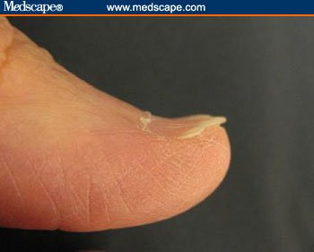
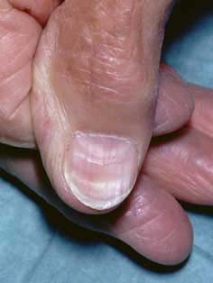
1.3 · Iron deficiency anemia: differential, pitfalls and diagnosis
The iron deficiency diagnosis slide: small, pale cells with low ferritin, low transferrin saturation and a high total iron-binding capacity.
| Differential diagnosis of iron deficiency (slide 13) | How the slide tells it apart |
|---|---|
| Anemia of chronic disease (specifically, anemia of inflammation) | Normal or increased ferritin; serum iron and transferrin saturation low; total iron-binding capacity (TIBC) normal or low |
| Thalassemia | A greater degree of microcytosis for any given hemoglobin; unlike most other anemias, a normal or elevated RBC count and a reticulocytosis; the smear resembles severe iron deficiency |
| Lead poisoning | (1.7) |
| Zinc deficiency | Listed only |
| Sideroblastic anemia | (1.6) |
- Diagnosis (slide 15):
- Complete blood count (CBC): microcytosis (decreased mean corpuscular volume (MCV), <80 fL); hypochromia (decreased mean corpuscular hemoglobin (MCH), pale red cells on the stained smear).
- Iron panel: reduced serum ferritin (with the slide 14 caveat); reduced transferrin saturation (Tsat); increased total iron-binding capacity (TIBC).
- Peripheral smear: microcytic and hypochromic red blood cells.
- Additional tests (slide 16): urinalysis; fecal occult blood test (stool guaiac test) for a gastrointestinal bleed; consider coagulation studies (prothrombin time (PT), partial thromboplastin time (PTT)).
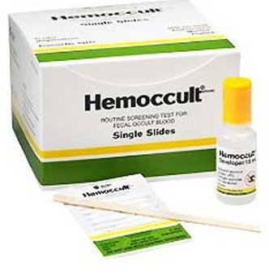
1.4 · Iron deficiency anemia: treatment and iron preparations
- Treatment (slide 17): treat the underlying cause.
- Menstrual blood loss: an oral contraceptive; consider a continuous-cycle contraceptive.
- Gastrointestinal (GI) bleed: GI consult for colonoscopy/endoscopy to evaluate for colorectal cancer.
- Discontinue anticoagulants if the anemia is severe, consulting cardiology.
- Iron replacement.
- Referral to hematology if the diagnosis is not confirmed or the patient is unresponsive to oral iron.
- Oral iron salts (slide 18): ferrous sulfate 325 mg orally once daily or every other day (contains 66 mg of elemental iron). Poor absorption, lots of side effects, poor adherence (“people hate it”). Gastrointestinal side effects are common: nausea and especially constipation, so always give it with at least an as-needed laxative/stool softener. Taking it with food reduces side effects but also decreases absorption.
- Better ideas (slide 19): studies show better absorption and fewer side effects with less frequent dosing; alternate-day dosing is probably best, but adherence can be a problem. Alternative: ferrous sulfate 44 mg/5 mL (as elemental iron) once daily in the morning, on an empty stomach, with a full glass of orange juice; the low pH, citric acid and vitamin C help uptake and limit the free iron reaching the rest of the gut, so fewer side effects.
- Length of treatment (slide 20): an appropriate response is the hematocrit halfway back toward normal within 3 weeks and back to baseline after 2 months; continue iron for 3–6 months after the counts normalize, to replenish iron stores.
- Parenteral iron (slide 21): for patients intolerant of or refractory to oral iron. Most iron-deficient patients need 1–1.5 g of parenteral iron, given over 15 minutes to 1 hour. Ferric pyrophosphate citrate (Triferic): a Food and Drug Administration (FDA)-approved additive to the dialysate that replaces the 5–7 mg of iron lost in each hemodialysis treatment.
Iron deficiency anemia
Defining feature: a microcytic, hypochromic anemia with low ferritin, low transferrin saturation and high total iron-binding capacity; in an adult, look for chronic blood loss
- Definition
- Anemia from too little iron, the cause of 50% of anemia worldwide (slide 11).
- Who gets it
- Women of childbearing age (10% in the United States), children aged 12–36 months (9% iron-deficient), low-income families; men under 50 only 1%; far commoner in developing countries (slide 11).
- Risk factors
- Chronic blood loss (gastrointestinal, menses; most common adult cause); vegan diet, tea, calcium antacids, proton pump inhibitors; malabsorption (gastric bypass, celiac sprue, food allergies); pregnancy, growth in infancy or adolescence (slide 10).
- Classic signs & symptoms
- Fatigue, decreased exercise tolerance, shortness of breath on exertion, pica (slide 12).
- Physical exam findings
- Pallor, smooth tongue, koilonychia (spoon-shaped nails), cheilosis; Plummer-Vinson syndrome (slide 12).
- Diagnostics / tests
- Complete blood count: mean corpuscular volume <80 fL, low mean corpuscular hemoglobin; iron panel: low ferritin, low transferrin saturation, high total iron-binding capacity; smear microcytic, hypochromic (slide 15). Ferritin is an acute phase reactant: a normal or high value does not exclude iron deficiency; add ESR and/or CRP (slide 14). Urinalysis, fecal occult blood test, consider PT/PTT (slide 16).
- First-line treatment
- Treat the cause (gastrointestinal consult for colonoscopy/endoscopy; contraceptive for menstrual loss); oral ferrous sulfate 325 mg daily or every other day with a stool softener, alternate-day dosing probably best; continue 3–6 months after counts normalize; parenteral iron if intolerant or refractory; hematology if unconfirmed or unresponsive to oral iron (slides 17–21).
- Complications
- Almost 1 million deaths a year worldwide (slide 11); otherwise not covered in the lecture.
Slides 10–21, 106
1.5 · Anemia of chronic disease (anemia of chronic inflammation)
How inflammation causes the anemia: interleukin 6 raises hepcidin, which locks iron away.
- What it is (slide 23): also called anemia of chronic inflammation; due to any inflammatory condition: infection, autoimmune disease, neoplasm. It initially resembles iron deficiency anemia.
- Multifactorial etiology (slide 23): inflammatory cytokines, in particular interleukin-6 (IL-6), upregulate hepcidin, which blocks iron absorption; systemic inflammation inhibits renal erythropoietin; likely direct inflammatory bone marrow suppression too.
- Epidemiology (slide 24): the 2nd most common anemia; any age; older adults at increased risk (more chronic inflammatory disease); in the United States about 1 million people older than 65 have it.
- Signs and symptoms (slide 24): similar to iron deficiency anemia, and resemble the causative condition.
- Diagnosis (slide 25): the same labs as iron deficiency anemia; if inflammation is not clinically known, an erythrocyte sedimentation rate (ESR) and/or C-reactive protein (CRP) can help. Serum ferritin should be normal or increased; a ferritin less than 30 ng/mL (67 pmol/L) indicates coexistent iron deficiency.
- Treatment (slide 26): treat the underlying condition (“most important”). May benefit from erythropoietin supplementation (epoetin alfa, Procrit); Food and Drug Administration (FDA)-approved indications: hemoglobin less than 10 g/dL, and anemia due to rheumatoid arthritis, inflammatory bowel disease (IBD), hepatitis C, zidovudine therapy in patients with human immunodeficiency virus (HIV), myelosuppressive chemotherapy of a solid malignancy, or chronic kidney disease (CKD). May need parenteral iron. Referral to hematology is not usually needed.
| Comparison (slide 27) | Anemia of chronic disease | Iron deficiency anemia |
|---|---|---|
| Red blood cells, hemoglobin, hematocrit | ↓ decreased (mild) | ↓ decreased |
| Mean corpuscular volume (MCV) | Normal or ↓ decreased | ↓ decreased |
| Mean corpuscular hemoglobin (MCH), MCH concentration (MCHC) | Normal or ↓ decreased | ↓ decreased |
| Red cell distribution width (RDW) | Varies | ↑ increased |
| Reticulocytes | Usually ↓ decreased | Varies |
| Serum iron | ↑ or ↓ (slide 13 says low; see the note above) | ↓ decreased |
| Ferritin | Normal or ↑ increased | ↓ decreased |
| Total iron-binding capacity (TIBC) | ↓ decreased | ↑ increased |
Anemia of chronic disease
Defining feature: anemia in a patient with an inflammatory illness, with ferritin normal or increased and total iron-binding capacity decreased (opposite to iron deficiency)
- Definition
- Anemia of inflammation: interleukin-6 raises hepcidin, which blocks iron absorption; inflammation suppresses renal erythropoietin and the marrow (slide 23).
- Who gets it
- Any age; older adults at increased risk; the 2nd most common anemia; about 1 million Americans over 65 (slide 24).
- Risk factors
- Any inflammatory condition: infection, autoimmune disease, neoplasm (slide 23).
- Classic signs & symptoms
- Similar to iron deficiency; resemble the causative condition (slide 24).
- Physical exam findings
- Not covered in the lecture beyond “similar to iron deficiency anemia” (slide 24).
- Diagnostics / tests
- Iron deficiency labs; ESR and/or CRP if inflammation is not known; ferritin normal or increased (less than 30 ng/mL means coexisting iron deficiency); total iron-binding capacity decreased (slides 25, 27).
- First-line treatment
- Treat the underlying condition (most important); erythropoietin (epoetin alfa) for hemoglobin <10 g/dL in the approved conditions; possibly parenteral iron; hematology referral not usually needed (slide 26).
- Complications
- Not covered in the lecture; slide 106: can persist while the underlying disease is active.
Slides 13, 23–27, 106
1.6 · Sideroblastic anemia
- Three types (slide 29): hereditary (usually X-linked); acquired (usually with myelodysplastic syndrome (MDS)); acquired/reversible: alcohol (EtOH), certain drugs (isoniazid, chlorambucil), copper deficiency, hypothermia, lead poisoning.
- Modern classification (slide 30): dyserythropoiesis (that is, hypohepcidinemia) and transfusion-dependence (myelodysplastic syndrome, thalassemia). Rare. About 2/3 of cases present in males in early childhood or adolescence, 1/3 in young to middle-aged females; can occur at any age.
- Presentation (slide 31): no specific clinical features other than those of anemia; usually moderate, hematocrit 20–30%.
- Diagnosis (slide 32): variable microcytosis and hypochromia; smear dimorphic (microcytes, normal cells and macrocytes); excess total body iron: increased serum iron, transferrin saturation and ferritin; increased zinc level if caused by copper deficiency; bone marrow aspirate shows ring sideroblasts, the defining feature (iron-containing mitochondria form a basophilic ring around the nucleus).
- Treatment (slide 33): remove the offending agent if acquired; occasionally red cell transfusions; typically poor response to recombinant erythropoietin; occasional responses to oral pyridoxine (50–200 mg/day); luspatercept, recently FDA approved for myelodysplastic syndrome with ringed sideroblasts; refer to hematology if diagnostic or transfusion support is needed.
Sideroblastic anemia
Defining feature: ring sideroblasts on bone marrow aspirate, with iron overload on the panel (serum iron, transferrin saturation and ferritin all high) and a dimorphic smear
- Definition
- An anemia with iron-laden mitochondria ringing the nucleus of red cell precursors; hereditary, acquired (myelodysplastic) or acquired/reversible (slides 29, 32).
- Who gets it
- Rare; 2/3 males in early childhood or adolescence, 1/3 young to middle-aged females; any age (slide 30).
- Risk factors
- X-linked inheritance; myelodysplastic syndrome; alcohol, isoniazid, chlorambucil, copper deficiency, hypothermia, lead poisoning (slide 29).
- Classic signs & symptoms
- No specific features beyond anemia; usually moderate, hematocrit 20–30% (slide 31).
- Physical exam findings
- Not covered in the lecture.
- Diagnostics / tests
- Variable microcytosis and hypochromia; dimorphic smear; increased serum iron, transferrin saturation and ferritin; bone marrow aspirate with ring sideroblasts (slide 32).
- First-line treatment
- Remove the offending agent if acquired; transfusion if severe; pyridoxine sometimes helps; luspatercept for myelodysplastic syndrome with ringed sideroblasts; erythropoietin works poorly; hematology for diagnostic or transfusion support (slide 33).
- Complications
- Not covered in the lecture; slide 106: variable prognosis, clonal forms need continued follow-up.
Slides 29–33, 106
1.7 · Lead poisoning (plumbism)
- Blood (slide 34): a microcytic/hypochromic anemia with basophilic stippling on the smear (an abnormal collection of nucleic acids in the cells).
- Causes (slide 34): industrial exposure; gasoline sniffing; lodged bullets; cooking utensils containing lead; lead-based paint chips; the Flint water crisis.
- Symptoms (slide 35): the neurologic system is most vulnerable (irritability, behavioral changes, peripheral neuropathy); gastrointestinal symptoms (abdominal colic, nausea and constipation, occasionally diarrhea); there may be a lead line in the gums.
- Treatment (slide 35): stop the exposure; treatment is based on the lead level; in severe cases with neurologic effects, chelating agents: succimer (Chemet), dimercaprol, EDTA.
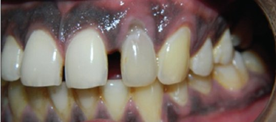
Lead poisoning
Defining feature: microcytic anemia with basophilic stippling plus neurologic and gastrointestinal symptoms, sometimes a lead line in the gums
- Definition
- Plumbism: lead toxicity causing a microcytic, hypochromic anemia (slide 34); also a reversible cause of sideroblastic anemia (slide 29).
- Who gets it
- People exposed to lead (slide 34); otherwise not covered in the lecture.
- Risk factors
- Industrial exposure, gasoline sniffing, lodged bullets, lead cooking utensils, lead paint chips, contaminated water (Flint) (slide 34).
- Classic signs & symptoms
- Irritability, behavioral changes, peripheral neuropathy; abdominal colic, nausea, constipation, occasionally diarrhea (slide 35).
- Physical exam findings
- A lead line in the gums (slides 35–36).
- Diagnostics / tests
- Microcytic, hypochromic anemia; basophilic stippling on the smear; the lead level guides treatment (slides 34–35).
- First-line treatment
- Stop the exposure; chelation (succimer, dimercaprol, EDTA) in severe cases with neurologic effects (slide 35).
- Complications
- Neurologic effects (slide 35); otherwise not covered in the lecture.
Slides 29, 34–36
1.8 · Macrocytic and megaloblastic anemia
- Macrocytic anemia (slide 38): anemia with a mean corpuscular volume (MCV) >100 fL. Two categories:
- Megaloblastic anemia: B12 and folate deficiency.
- Non-megaloblastic anemia: alcohol (common) or drug; hypothyroidism; liver failure; bone marrow dysplasia. Non-megaloblastic causes usually have an MCV <115 fL.
- Megaloblastic anemia (slide 39): a macrocytic anemia with megaloblasts (early red cell precursors), characterized by macrocytosis with macro-ovalocytes and hypersegmented neutrophils. DNA synthesis is impaired, causing nuclear-cytoplasmic asynchrony and impaired hematopoiesis; other myeloid cells (granulocytes, megakaryocytes) are affected to a lesser degree.
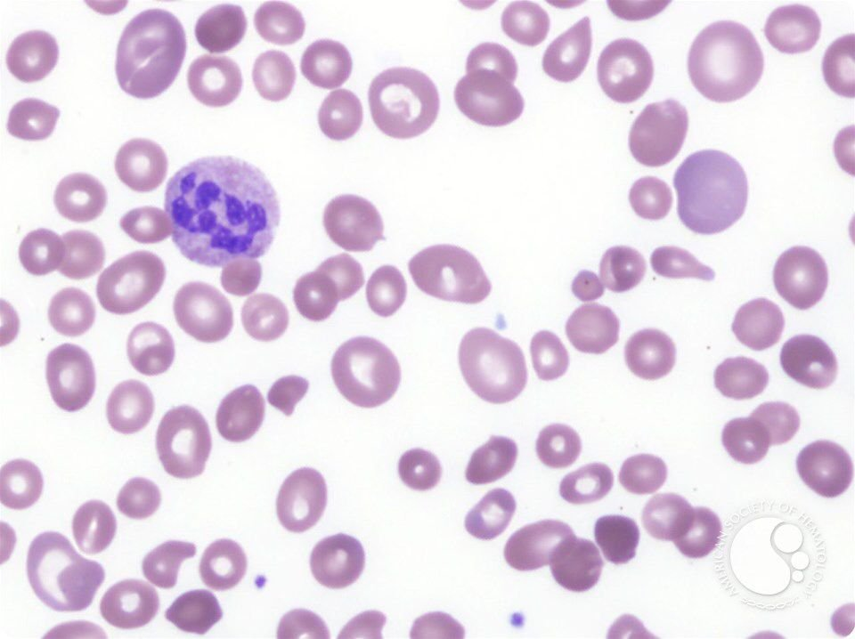
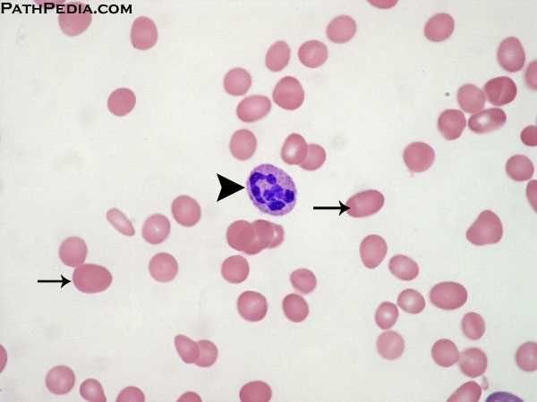
| Complete blood count in megaloblastic anemia (slide 41): macrocytic, normochromic | Result |
|---|---|
| Red blood cells, hemoglobin, hematocrit | ↓ decreased |
| Mean corpuscular volume (MCV) | ↑ increased (macrocytosis) |
| Mean corpuscular hemoglobin (MCH), MCH concentration (MCHC) | Normal to slightly ↑ increased |
| Red cell distribution width (RDW) | ↑ increased (anisocytosis: cells of unequal size) |
| Reticulocytes | Varies |
- Folate deficiency: causes (slide 42): dietary (impoverished, indigent, alcohol use disorder, elderly); increased demand (pregnancy); impaired absorption (proximal small bowel); drugs: methotrexate, 5-fluorouracil (5-FU), hydroxyurea, phenytoin (Dilantin), metformin.
1.9 · Vitamin B12 (cobalamin) deficiency and pernicious anemia
- B12 absorption (slide 43): peptic digestion releases dietary B12; parietal cells in the gastric mucosa release intrinsic factor, which binds free B12 and protects it from digestive enzymes; the B12–intrinsic factor complex passes to the distal ileum and binds cubilin (the intrinsic factor receptor); absorbed B12 binds transcobalamin and is stored in the liver. Normal liver stores last about 3–4 years or more.
- Pernicious anemia (slide 44): the most frequent cause of B12 deficiency; an autoimmune reaction against parietal cells and/or intrinsic factor, causing gastric atrophy and an increased risk of gastric cancer.
- Clinical features (slide 45): findings of all anemias (fatigue, pallor, headache; dyspnea and heart failure when severe); gastrointestinal symptoms (glossitis, oral ulcers). The distinguishing finding of B12 deficiency is neurologic: demyelination, especially of the dorsal and lateral spinal cord tracts; neuropsychiatric changes (depression, irritability, insomnia, cognitive slowing, dementia); symmetric numbness, tingling, burning to the hands and feet (“stocking and glove distribution”), progressing to an unsteady gait and loss of position sense. Neurologic findings may or may not improve with B12.
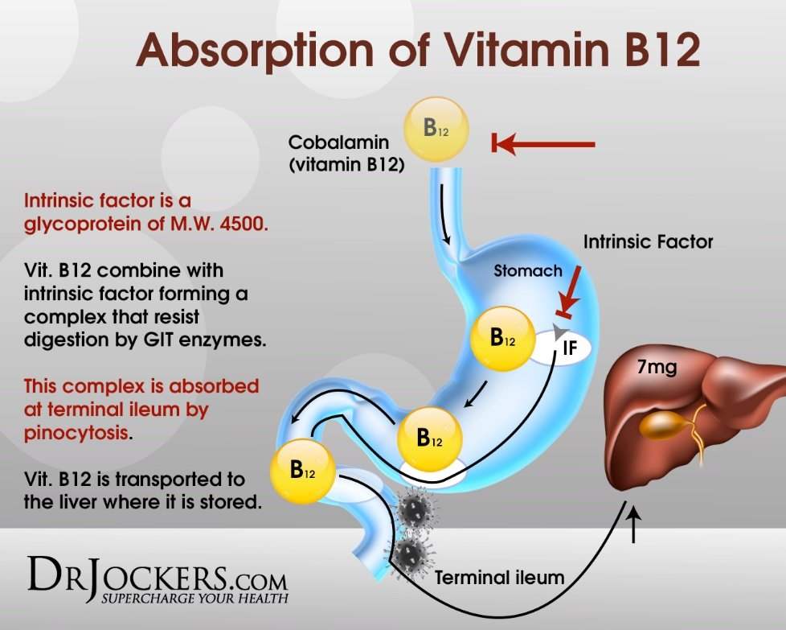
Glossitis (slide 46)
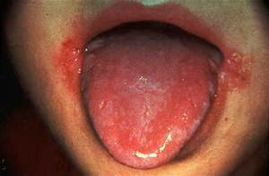
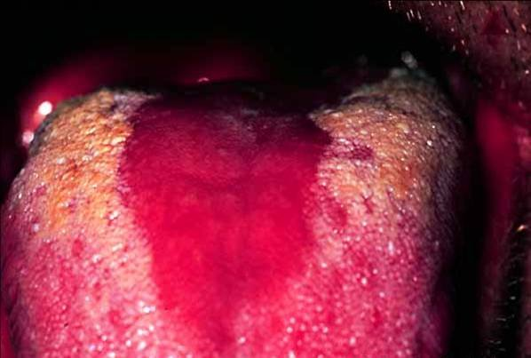
1.10 · Laboratory evaluation of macrocytic anemia and replacement
Homocysteine rises in B12 and folate deficiency; methylmalonic acid rises in B12 deficiency only.
- All macrocytic anemias (slide 47): B12 and folate levels are the initial tests (not very sensitive) plus a peripheral blood smear. If borderline, or suspicion continues:
- Homocysteine level: converting homocysteine to methionine needs both B12 and folate, so it rises in either deficiency.
- Methylmalonic acid (MMA) level: converting L-methylmalonyl CoA to succinyl CoA needs only B12, so methylmalonic acid is elevated in B12 deficiency but NOT in folate deficiency.
- Pernicious anemia (slide 48): anti-intrinsic factor (anti-IF) antibodies: specific but not sensitive; anti-parietal cell antibodies: neither sensitive nor specific; gastric biopsy may show chronic atrophic gastritis. In reality, a megaloblastic picture that corrects with B12 is the normal diagnostic pathway.
- Replacement (slide 49): before replacing folate, evaluate for B12 deficiency; otherwise the labs may improve while permanent neurologic symptoms worsen.
- B12 injections 1000 mcg subcutaneously or intramuscularly weekly for 3 weeks; or oral cobalamin 1000–2000 mcg daily.
- Folic acid 1 mg by mouth or parenterally daily for 1–2 weeks.
| Homocysteine and methylmalonic acid (slide 47) | Homocysteine | Methylmalonic acid |
|---|---|---|
| B12 deficiency | Elevated | Elevated |
| Folate deficiency | Elevated | Not elevated |
Vitamin B12 deficiency (pernicious anemia)
Defining feature: megaloblastic anemia with neurologic findings (dorsal and lateral column demyelination, stocking and glove paresthesias) and an elevated methylmalonic acid
- Definition
- Megaloblastic anemia from lack of B12; pernicious anemia, the most frequent cause, is autoimmune destruction of parietal cells and/or intrinsic factor (slides 39, 44).
- Who gets it
- Not covered in the lecture beyond the causes; liver stores last about 3–4 years, so deficiency is slow to appear (slide 43).
- Risk factors
- Autoimmune gastritis (pernicious anemia); anything breaking the absorption chain (stomach, intrinsic factor, distal ileum) (slides 43–44).
- Classic signs & symptoms
- Fatigue, headache; symmetric numbness, tingling, burning in the hands and feet; depression, irritability, insomnia, cognitive slowing, dementia (slide 45).
- Physical exam findings
- Pallor; glossitis (smooth, red tongue), oral ulcers; unsteady gait, loss of position sense (slides 45–46).
- Diagnostics / tests
- MCV >100 fL; macro-ovalocytes and hypersegmented neutrophils; B12 and folate levels first (not very sensitive); homocysteine and methylmalonic acid both elevated; anti-intrinsic factor antibodies (specific, not sensitive); gastric biopsy atrophic gastritis; correction with B12 is the usual diagnostic pathway (slides 38–41, 47–48).
- First-line treatment
- B12 1000 mcg subcutaneously or intramuscularly weekly for 3 weeks, or oral cobalamin 1000–2000 mcg daily; check B12 before giving folate (slide 49).
- Complications
- Neurologic deficits that may not improve (slides 45, 106); gastric cancer risk in pernicious anemia (slide 44); heart failure if severe (slide 45).
Slides 38–49, 106
Folate deficiency
Defining feature: megaloblastic anemia with an elevated homocysteine but a normal methylmalonic acid, in a poorly nourished, alcohol-using, pregnant or methotrexate-treated patient
- Definition
- Megaloblastic anemia from lack of folate (slides 38–39, 42).
- Who gets it
- The impoverished, indigent, people with alcohol use disorder, the elderly; pregnancy (slide 42).
- Risk factors
- Poor diet; pregnancy; proximal small bowel malabsorption; methotrexate, 5-fluorouracil, hydroxyurea, phenytoin, metformin (slide 42).
- Classic signs & symptoms
- Findings of all anemias (slide 45); the neurologic findings are what distinguish B12 deficiency, not folate (slide 45).
- Physical exam findings
- Not covered in the lecture separately from B12 deficiency.
- Diagnostics / tests
- MCV >100 fL with macro-ovalocytes and hypersegmented neutrophils; folate level; homocysteine elevated, methylmalonic acid not (slides 41, 47).
- First-line treatment
- Evaluate for B12 deficiency first; folic acid 1 mg by mouth or parenterally daily for 1–2 weeks (slide 49).
- Complications
- Giving folate to an unrecognized B12 deficiency lets the neurologic damage progress (slide 49).
Slides 38–42, 47, 49
1.11 · The laboratory tests so far
| Laboratory tests discussed so far (slide 50) | Tests |
|---|---|
| All anemias | Complete blood count (CBC); reticulocyte count; calculate the reticulocyte index |
| For microcytic anemia | Serum iron; transferrin saturation; total iron-binding capacity; serum ferritin; fecal occult blood test; urinalysis |
| For macrocytic anemias | B12 and folate levels; peripheral smear review; homocysteine and methylmalonic acid |
| If pernicious anemia is suspected | Anti-intrinsic factor antibodies; anti-parietal cell antibodies; parenteral B12 trial |
1.12 · Anemia of chronic kidney disease (anemia due to renal failure)
- Slide 52: extremely common in chronic kidney disease (CKD); incidence rises as the glomerular filtration rate (GFR) declines and it is almost universal in dialysis patients. Primarily, but not completely, due to decreased erythropoietin (EPO).
- Slide 53 (guideline summary):
- Mechanism: the erythropoietin response is inappropriately low; inflammation/hepcidin restrict available iron.
- Order: complete blood count, reticulocyte count, ferritin and transferrin saturation (TSAT); assess other causes of anemia.
- Interpret: a low transferrin saturation may indicate iron-restricted erythropoiesis despite a normal or high ferritin.
- Treat: correct iron deficiency; consider oral or intravenous iron and an erythropoiesis-stimulating agent (ESA) based on chronic kidney disease stage, hemoglobin and risk.
- Follow-up: monitor hemoglobin, iron and blood pressure; nephrology for advanced chronic kidney disease, erythropoiesis-stimulating agent decisions or uncertainty.
| Complete blood count in anemia of chronic kidney disease (slide 52) | Result |
|---|---|
| Red blood cells, hemoglobin, hematocrit | ↓ decreased |
| Mean corpuscular volume (MCV) | Normal (normocytic) |
| Mean corpuscular hemoglobin (MCH), MCH concentration (MCHC) | Normal |
| Red cell distribution width (RDW) | ↑ increased |
| Reticulocytes | ↓ decreased |
Anemia of chronic kidney disease
Defining feature: a normocytic anemia with low reticulocytes in a patient with falling glomerular filtration rate or on dialysis, from too little erythropoietin
- Definition
- Anemia of renal failure, primarily from decreased erythropoietin, with inflammation/hepcidin restricting iron (slides 52–53).
- Who gets it
- Patients with chronic kidney disease; rises as glomerular filtration rate falls; almost universal on dialysis (slide 52).
- Risk factors
- Declining glomerular filtration rate; dialysis (slide 52).
- Classic signs & symptoms
- Not covered in the lecture beyond those of anemia.
- Physical exam findings
- Not covered in the lecture.
- Diagnostics / tests
- CBC (low counts, normal MCV, MCH and MCHC, high RDW, low reticulocytes), reticulocyte count, ferritin and transferrin saturation; low saturation with a normal or high ferritin can mean iron-restricted erythropoiesis; assess other causes (slides 52–53).
- First-line treatment
- Correct iron deficiency (oral or intravenous iron); consider an erythropoiesis-stimulating agent by stage, hemoglobin and risk (slide 53); Triferic in the dialysate replaces the iron lost in each hemodialysis (slide 21).
- Complications
- Not covered in the lecture; monitor blood pressure (slide 53); slide 106: often chronic.
Slides 21, 52–53, 106
1.13 · Aplastic anemia
Aplastic anemia treatment.
- Slide 55: pancytopenia, the loss of all three cell lines (red cells, platelets and white cells). Loss of hematopoietic stem cells (HSC) is the defining feature. Half of cases occur in the first three decades of life (a small peak in childhood and a 2nd small peak at ages 20–25); male-to-female ratio about 1:1; 0.6 to 6.1 cases per million. Five-year survival is >75% after a bone marrow transplant from a suitable donor; the majority of untreated patients die within one year.
- Pathophysiology (slide 56): autoimmune; direct injury to hematopoietic stem cells (drugs, chemicals, radiation); viral infections; genetic causes. Drugs, chemicals, viruses or mutations can alter the stem cells and predispose them to autoimmune destruction.
- Associations (slide 57): cytotoxic or chemotherapeutic drugs (not called aplastic anemia if it is an expected effect); chloramphenicol; ionizing radiation; toxins (benzene, pesticides); clonal abnormalities (paroxysmal nocturnal hemoglobinuria (PNH), myelodysplastic syndrome, acute myeloid leukemia (AML)); inherited (Fanconi anemia, diagnosed in childhood; other rare conditions).
- Slide 58: manifestations of pancytopenia: recurrent infections (neutropenia); bleeding, petechiae, purpura (thrombocytopenia); fatigue, pallor (anemia). Bone marrow biopsy is required for diagnosis and to exclude other causes. Urgent/emergent consultation with a hematologist/oncologist. Treatment: bone marrow transplant.
Aplastic anemia
Defining feature: pancytopenia (infections, bleeding and anemia together) from loss of hematopoietic stem cells, confirmed by bone marrow biopsy
- Definition
- Loss of hematopoietic stem cells causing loss of all three cell lines (slide 55).
- Who gets it
- Half in the first three decades (peaks in childhood and at 20–25); males and females equally; 0.6–6.1 per million (slide 55).
- Risk factors
- Chemotherapy (expected effect excluded), chloramphenicol, ionizing radiation, benzene, pesticides, viral infection, paroxysmal nocturnal hemoglobinuria, myelodysplastic syndrome, acute myeloid leukemia, Fanconi anemia (slides 56–57).
- Classic signs & symptoms
- Recurrent infections, bleeding, fatigue (slide 58).
- Physical exam findings
- Petechiae, purpura, pallor (slide 58).
- Diagnostics / tests
- CBC showing pancytopenia; bone marrow biopsy is required (slides 55, 58).
- First-line treatment
- Urgent/emergent hematology-oncology consultation; bone marrow transplant (slide 58); infection and bleeding precautions (slide 106).
- Complications
- Most untreated patients die within one year; five-year survival >75% after transplant from a suitable donor (slide 55).
Slides 55–58, 106
1.14 · Leukopenia and neutropenia
- Recognize (slide 59): leukopenia is a low total white blood cell count (WBC); neutropenia is defined by the absolute neutrophil count (ANC).
- Calculate (slide 59):
ANC = WBC × (neutrophils + bands)% / 100
| Neutropenia severity (slide 59) | Absolute neutrophil count |
|---|---|
| Mild | 1,000–1,500 cells/µL |
| Moderate | 500–999 cells/µL |
| Severe | <500 cells/µL |
- Common causes (slide 59): viral illness, medications/chemotherapy, autoimmune disease, nutrient deficits, marrow pathology.
- Order and interpret (slide 59): repeat the complete blood count with differential, review the trend and the peripheral smear; check the other cell lines.
- Escalate (slide 59): persistent or unexplained severe neutropenia, other cytopenias or an abnormal smear → hematology.
- Clinical risk (slide 60): severity, duration and immune status predict infection risk; profound neutropenia may have subtle findings.
- Emergency (slide 60): fever with an ANC <500 (or expected to fall below 500) needs prompt assessment and empiric antibiotics. Immediate evaluation: vitals, targeted examination and cultures; start antipseudomonal therapy without delay.
- Chronic care (slide 60): stop an offending drug when appropriate; correct deficiencies; selected patients need granulocyte colony-stimulating factor (G-CSF).
- Education and follow-up (slide 60): report fever or rigors promptly; monitor counts; reversible causes often resolve; marrow disorders need specialist care.
- Prognosis (slide 60): transient viral leukopenia often resolves after recovery; persistent or severe neutropenia carries greater infection risk and may indicate marrow disease.
Leukopenia / neutropenia
Defining feature: a low white count, graded by the absolute neutrophil count; fever with a count below 500 is an emergency
- Definition
- Leukopenia: low total white count; neutropenia: defined by the absolute neutrophil count = WBC × (neutrophils + bands)% / 100 (slide 59).
- Who gets it
- Not covered in the lecture beyond the causes.
- Risk factors
- Viral illness, medications/chemotherapy, autoimmune disease, nutrient deficits, marrow pathology (slide 59).
- Classic signs & symptoms
- Infection; fever or rigors; findings may be subtle when neutropenia is profound (slide 60).
- Physical exam findings
- Vitals and a targeted examination for a source (slide 60); otherwise not covered in the lecture.
- Diagnostics / tests
- Repeat CBC with differential, trend, peripheral smear, other cell lines; grade mild 1,000–1,500, moderate 500–999, severe <500 cells/µL; cultures if febrile (slides 59–60).
- First-line treatment
- Fever with ANC <500: prompt empiric antipseudomonal antibiotics; chronic: stop an offending drug, correct deficiencies, G-CSF for selected patients; hematology for persistent or unexplained severe neutropenia (slides 59–60).
- Complications
- Infection, greater when persistent or severe; may signal marrow disease (slide 60).
Slides 59–60
1.15 · Hemolytic anemias: what they share and their causes
The genetic causes of hemolysis; the upper smear shows spherocytes.
- Definition (slide 61): shortened survival of circulating red cells due to their premature destruction; numerous causes, mild to severe, acute to chronic. An unexpected rise in the reticulocyte count, even without anemia or symptoms, should prompt consideration of hemolysis. The red cell (about 6 µm) squeezes through capillaries of about 2 µm.
- What lets the red cell survive shear stress (slide 62): a highly deformable membrane and cytoskeleton; a strong redox environment that prevents oxidative stress; an optimal surface-to-volume ratio (the biconcave disc has about 40% more surface area than a sphere; the cytoskeletal proteins are spectrin and ankyrin). Hemolysis occurs when the cell can no longer withstand this.
- Three things all hemolytic anemias share (slide 63): a decreased red cell life span; a compensatory increase in red cell production; retention of the products of red cell destruction (including iron). So: marrow hyperplasia and increased reticulocytes; in severe chronic hemolysis, extramedullary hematopoiesis in the liver, spleen and lymph nodes.
| Causes of hemolysis | Examples on the slides |
|---|---|
| Intracorpuscular defects: intrinsic to the red cell itself (slide 64) | |
| Hemoglobinopathies | Sickle cell disease, thalassemia, unstable hemoglobin variants |
| Membrane/cytoskeletal defects | Hereditary spherocytosis, elliptocytosis, stomatocytosis |
| Metabolic abnormalities | G6PD and pyruvate kinase deficiencies |
| Extracorpuscular defects (slide 65) | |
| Immune-mediated | Autoimmune hemolytic anemia, transfusion reactions |
| Hypersplenism | — |
| Mechanical trauma | Shear stress |
| Oxidative stress | G6PD deficiency, methemoglobinemia |
| Infection | Malaria, babesiosis |
| Toxin | Snake and insect bites, burns, copper poisoning |
- Genetic causes (slide 75): defects in the red cell membrane, hemoglobin itself or enzymes.
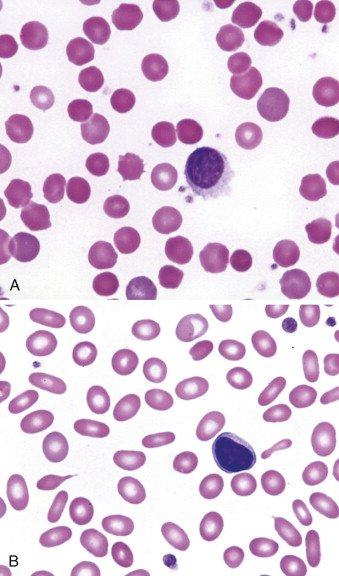
1.16 · Hemolysis: where it happens, labs, smear, workup and presentation
- Slide 66: the cell’s contents are released; the concern is mainly hemoglobin.
- Extravascular hemolysis, the more common way: mainly in the spleen and liver; macrophages engulf the red cells and release unconjugated bilirubin, which is conjugated in the liver.
- Intravascular hemolysis: free hemoglobin is picked up by haptoglobin and taken to the liver; this is incomplete, so some hemoglobin appears in the urine.
- Three more tests (slide 67):
- Bilirubin (conjugated and unconjugated): both likely elevated, unconjugated > conjugated; clinical jaundice appears when total bilirubin exceeds 2.0 mg/dL (normal 0.3–1.2 mg/dL).
- Haptoglobin: DECREASED or absent with intravascular hemolysis.
- Lactate dehydrogenase (LDH): a common cytoplasmic enzyme, elevated with any cell lysis.
- Smear (slide 68): order a peripheral smear on any patient with suspected hemolysis; the hallmark finding of hemolysis is schistocytes (red blood cell fragments).
- Workup for a suspected hemolytic anemia (slide 69): complete blood count, reticulocyte count, serum bilirubin, lactate dehydrogenase, haptoglobin, urinalysis, peripheral smear review.
- Clinical presentation (slide 70): typical anemia symptoms (fatigue, shortness of breath, chest pain, pallor; severe: chest pain, high-output cardiac failure, shock). Differentiating findings: jaundice, splenomegaly, joint pain, hematuria. Often the first indication is an increase in the reticulocyte count.
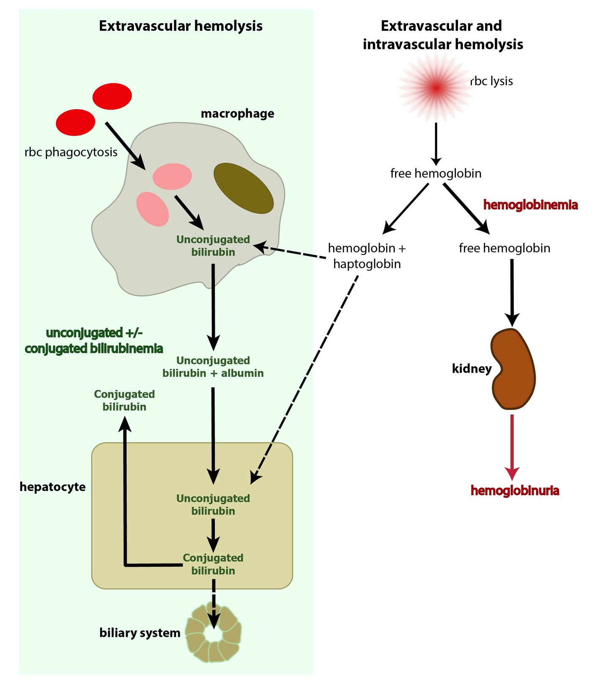
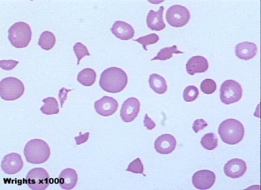
1.17 · Autoimmune hemolytic anemia
- Slide 71: an antibody against the red cell membrane; may be primary (de novo antibody production) or secondary. Transfusion reaction is an example. Primary autoimmune hemolytic anemia (AIHA) is almost always IgG. Common secondary causes: viruses (human immunodeficiency virus (HIV), hepatitis, Epstein-Barr virus (EBV), SARS-CoV-2); autoimmune disorders (lupus, rheumatoid arthritis, scleroderma, ulcerative colitis); lymphoproliferative disorders (leukemias and lymphomas, multiple myeloma); pregnancy.
- Direct antiglobulin test (DAT), or Coombs test (slide 72): the patient’s red cells are washed and combined with Coombs reagent; the reagent antibodies bind only cells coated with IgG or complement; if positive, they cross-link and the red cells agglutinate (precipitate).
- Important note (slide 73): autoimmune hemolytic anemia is associated with an increased risk of venous thromboembolism (VTE). Consider a D-dimer and bilateral leg ultrasound for deep vein thrombosis (DVT) and/or pulmonary embolism (PE); VTE prophylaxis for inpatients, and consider it in outpatients.
- Venous thromboembolism prophylaxis. Autoimmune hemolytic anemia is associated with an increased risk of venous thromboembolism, so remember venous thromboembolism prophylaxis for inpatients, and consider it in outpatients.
- Treatment (slide 74): consider immediate stabilization if hemoglobin <6, a rapid decline, or an unstable patient (contact the blood bank: compatible blood must be found). Rule out secondary causes. Treat with glucocorticoids initially (for example, prednisone 60–100 mg daily) and rituximab (Rituxan), an anti-CD20 antibody. Other options: immunosuppressants, splenectomy.
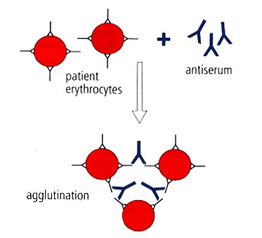
Autoimmune hemolytic anemia
Defining feature: hemolysis with a positive direct antiglobulin (Coombs) test; watch for venous thromboembolism
- Definition
- Antibody against the red cell membrane; primary (almost always IgG) or secondary (slide 71).
- Who gets it
- Patients with the secondary causes below; otherwise not covered in the lecture.
- Risk factors
- HIV, hepatitis, Epstein-Barr virus, SARS-CoV-2; lupus, rheumatoid arthritis, scleroderma, ulcerative colitis; leukemia, lymphoma, multiple myeloma; pregnancy; transfusion (slide 71).
- Classic signs & symptoms
- Anemia symptoms; jaundice, splenomegaly, joint pain, hematuria (slide 70).
- Physical exam findings
- Jaundice, splenomegaly (slide 70); signs of deep vein thrombosis (slide 73).
- Diagnostics / tests
- Hemolysis workup (slide 69); positive direct antiglobulin (Coombs) test (slide 72); D-dimer and bilateral leg ultrasound if thrombosis is suspected (slide 73).
- First-line treatment
- Stabilize if hemoglobin <6, falling fast or unstable (blood bank); rule out secondary causes; glucocorticoids first (prednisone 60–100 mg daily), rituximab; immunosuppressants, splenectomy; VTE prophylaxis for inpatients (slides 73–74).
- Complications
- Venous thromboembolism (slide 73); relapse (slide 107).
Slides 69–74, 107
1.18 · G6PD (glucose-6-phosphate dehydrogenase) deficiency
Bite cells (left image) and Heinz bodies (right image); the hemolysis is both intravascular and extravascular.
- Slide 76: the most common genetic disorder of red cells (200–400 million people); usually triggered by drugs with high oxidative potential. X-linked recessive, so generally only males are affected; carrier females have two red cell populations, one normal and one deficient, and are generally unaffected.
- Pathophysiology (slide 77): G6PD is needed in the glutathione pathway; without reduced glutathione the red cell is more susceptible to oxidative damage. Heinz bodies form inside the cell; splenic macrophages remove them by taking a chunk out of the cell (the bite cell). The result is intravascular and extravascular hemolysis.
- Slide 79: an X-linked recessive disorder of an enzyme that protects against oxidative damage; exposure to oxidative stress causes an acute hemolytic anemia. Common triggers:
- Fava beans
- Naphthalene (mothballs)
- Antimalarials (the slide names chloroquine, but Prof. Ward said chloroquine does not carry the same risk; see the conflict note above)
- Nitrofurantoin
- Trimethoprim/sulfamethoxazole (Bactrim)
- Methylene blue
- Phenazopyridine
- Quinolones
- Prevalence (slide 80): Kurdish Jews 60–70%; Sardinians 4–35% (by village); Nigerians 22%; Thai 17%; American Black people 11–12%; Brazilian Black people 8%; Greeks 6%; South China about 6%; India 3%; Japanese and Koreans 0–1%.
- Clinical presentation (slide 81): no symptoms until exposed to oxidative stress; drug-induced hemolysis is acute, of variable severity, with a lag of 2–3 days. Symptoms: abdominal pain, jaundice, dark urine, splenomegaly.
- Diagnosis (slide 82): labs consistent with hemolytic anemia; during an attack the smear may show Heinz bodies and bite cells; confirmed by a low G6PD level roughly 8 weeks after an attack (the slide asks, unanswered, “Why not during an attack?”).
- Treatment (slide 82): “Don’t eat that” (avoid the trigger); hydrate; transfuse if needed; possible splenectomy only for recurrent attacks.
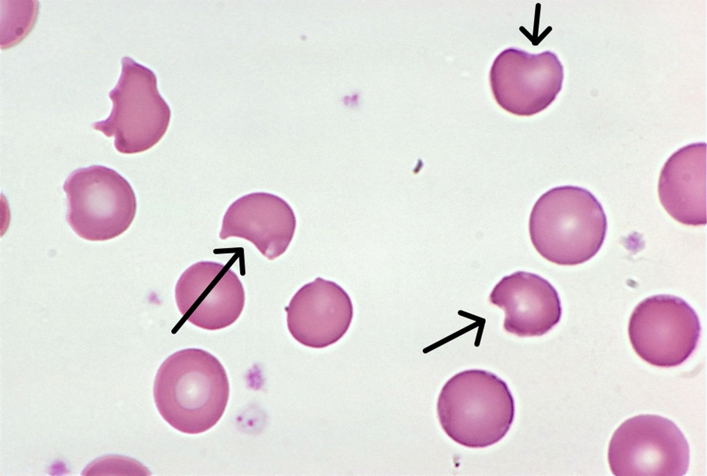
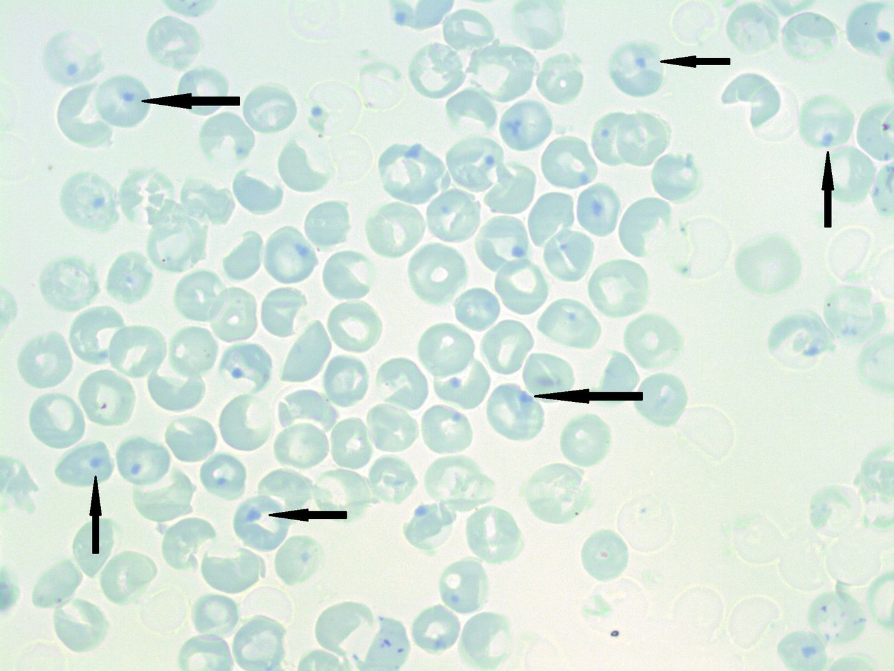
G6PD deficiency
Defining feature: a male who develops acute hemolysis 2–3 days after an oxidant (fava beans, nitrofurantoin, trimethoprim/sulfamethoxazole, a quinolone), with Heinz bodies and bite cells
- Definition
- X-linked recessive lack of the enzyme that protects red cells from oxidative damage; the most common genetic disorder of red cells (slides 76–77, 79).
- Who gets it
- Generally males (carrier females generally unaffected); highest in Kurdish Jews, Sardinians, Nigerians, Thai people; 11–12% of American Black people (slides 76, 80).
- Risk factors
- Oxidant exposure: fava beans, naphthalene (mothballs), antimalarials, nitrofurantoin, trimethoprim/sulfamethoxazole, methylene blue, phenazopyridine, quinolones (slide 79).
- Classic signs & symptoms
- No symptoms until exposed; then abdominal pain, jaundice, dark urine after a 2–3 day lag (slide 81).
- Physical exam findings
- Jaundice, splenomegaly (slide 81).
- Diagnostics / tests
- Hemolysis labs; Heinz bodies and bite cells on the smear during an attack; confirm with a low G6PD level about 8 weeks after the attack (slide 82).
- First-line treatment
- Avoid the trigger; hydrate; transfuse if needed; splenectomy only for recurrent attacks (slide 82).
- Complications
- Acute hemolytic anemia (intravascular and extravascular) (slides 77, 79); slide 107: usually favorable with trigger avoidance.
Education after an attack. Education for this deficiency is to avoid oxidative triggers and seek care for jaundice or dark urine, the signs of an acute hemolytic attack. With trigger avoidance the prognosis is usually favorable.
Slides 76–82, 107
1.19 · Thalassemia
“Be familiar with our lab testing”: the thalassemia lab slide.
- Slide 85: mutations causing deficient synthesis of alpha or beta globins; there is a deficiency of hemoglobin and most erythroblasts die in the marrow. Main problem: the imbalance in expression leads to accumulation and precipitation of globin subunits, which causes red cell destruction in the spleen.
- Epidemiology (slide 86): alpha thalassemia is prevalent in Southern China, Malaysia, Thailand and the Mediterranean region, with mild forms in people of African origin. Asian ancestry often carries the alpha thalassemia 1 trait (αα/––), with a higher risk of hydrops fetalis; African ancestry more often the alpha thalassemia 2 trait (α–/α–). (Beta thalassemia: “generally in patients of African origin”, a loose line; see the note above.)
- Clinical course (slide 87): variable by mutation; varying degrees of hemolytic anemia (generally ↓ hemoglobin, ↓ mean corpuscular volume, ↓ mean corpuscular hemoglobin, ↓ reticulocyte index (marrow failure), Coombs negative), iron overload (bold and underlined on the slide), splenomegaly, extramedullary hematopoiesis, jaundice, skeletal changes.
- Laboratory testing (slide 88): complete blood count, iron studies, reticulocyte count; hemoglobin analysis by hemoglobin electrophoresis; gene testing. Preconception testing and counseling is available with a family history.
- Genetics and treatment (slide 89): 4 alpha globin genes and 2 beta globin genes; the phenotype depends on how many are mutated, from a silent carrier (α–/αα) to incompatible with life. Treatment is supportive: transfusion only when absolutely necessary (it can worsen iron overload), folic acid, genetic counseling.
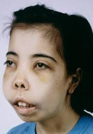
Thalassemia
Defining feature: marked microcytosis for the hemoglobin with a normal or high red cell count, Coombs-negative hemolysis, and diagnosis by hemoglobin electrophoresis
- Definition
- Deficient alpha or beta globin synthesis; the unpaired globin chains precipitate and the cells are destroyed in the spleen (slide 85).
- Who gets it
- Alpha: Southern China, Malaysia, Thailand, the Mediterranean; Asian ancestry often alpha thalassemia 1 trait (αα/––, higher risk of hydrops fetalis), African ancestry alpha thalassemia 2 trait (α–/α–) (slide 86).
- Risk factors
- Family history (inherited globin gene mutations; 4 alpha and 2 beta genes) (slides 88–89).
- Classic signs & symptoms
- Varying hemolytic anemia, jaundice; severity depends on the mutation, from silent carrier to incompatible with life (slides 87, 89).
- Physical exam findings
- Splenomegaly, jaundice, skeletal changes (facial bone overgrowth) (slide 87).
- Diagnostics / tests
- CBC (low hemoglobin, MCV, MCH and reticulocyte index; normal or high red cell count), iron studies, reticulocyte count, Coombs negative; hemoglobin electrophoresis; gene testing (slides 13, 87–88).
- First-line treatment
- Supportive: transfusion only when absolutely necessary, folic acid, genetic counseling; preconception testing with a family history (slides 88–89).
- Complications
- Iron overload (worsened by transfusion), extramedullary hematopoiesis, hydrops fetalis (slides 86–87, 89).
Slides 13, 85–89, 107
1.20 · Sickle cell anemia: genetics, distribution, screening and manifestations
- Slide 90: a mutation of a beta globin gene; hemoglobin S (HbS) is two alpha globins and two mutant beta globins (α2βS2). Under low oxygen tension, HbS polymerizes and the cell forms a sickle shape.
- Distribution (slide 91): follows the malaria belt closely; heterozygotes (HbAS, sickle trait) are 90% less likely to have severe malaria than people with only normal hemoglobin (HbA).
- Screening: four testing periods (slide 92):
- Preconception: identify parents whose children would be at risk.
- Prenatal: chorionic villus sampling (CVS) (the slide adds “at 9wk gestation”; see the note above).
- Neonatal: now done in all 50 states. Affected children who test negative or bypass screening usually present within the first two years; symptoms usually start around 5 months with the switch from fetal hemoglobin (HbF) to HbS: failure to thrive, pain, anemia, splenomegaly, multiple chronic infections, and swelling of the hands and feet (extremities) from vaso-occlusion.
- Post-natal.
- Clinical manifestations (slide 93):
- Anemia: almost universal, hematocrit usually 15–30%.
- Sickle cell pain crisis: microvascular occlusions; acute pain, tenderness, anxiety, tachycardia.
- Infarction of any tissue with vascular beds: splenic infarct, aseptic necrosis especially of the femoral or humeral heads, retinopathy, kidney disease.
- Leg ulcers.
- Stroke (pediatric), 300 times higher than unaffected children; 25% of patients with sickle cell anemia have a stroke (cerebrovascular accident (CVA)) by age 45.
- Priapism.
- Increased susceptibility to encapsulated bacteria.
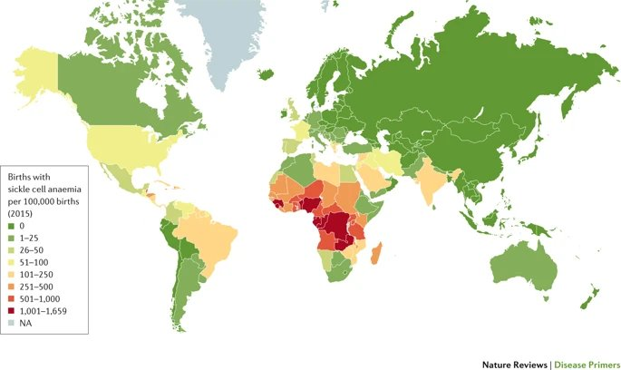
1.21 · Acute chest syndrome and the complications of sickle cell disease
“Be familiar with our treatments.”
- Acute chest syndrome (slide 94): the leading cause of death in sickle cell disease (SCD); often with an acute pain event; >10% mortality in adults. The cause is multifactorial: infection, infarction, pulmonary embolism (PE), fat embolism; reactive lung disease increases the risk. Consider it with chest pain, fever, shortness of breath, signs of a respiratory illness, hypoxemia, and pulmonary infiltrates on a chest X-ray (CXR).
- Complications diagram (slide 95), acute and chronic, head to foot: neurocognitive dysfunction, meningitis, stroke; retinopathy, post-hyphema glaucoma, retinal infarction; pulmonary hypertension, acute chest syndrome, acute pain event; indirect hyperbilirubinemia, sickle hepatopathy, gallstones; cardiomegaly, diastolic heart failure; anemia, leukocytosis, septicemia; albuminuria, isosthenuria, kidney injury, papillary necrosis; functional asplenia, splenic infarction, splenic sequestration; delayed puberty, erectile dysfunction, priapism; complications of pregnancy; avascular necrosis, bone marrow infarction, osteomyelitis; skin ulcers; chronic pain.
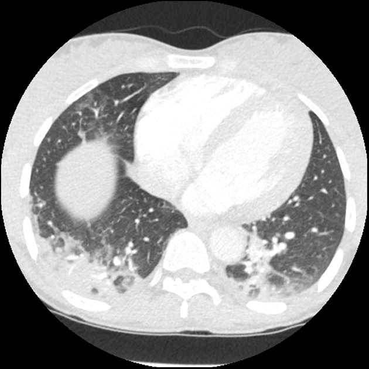
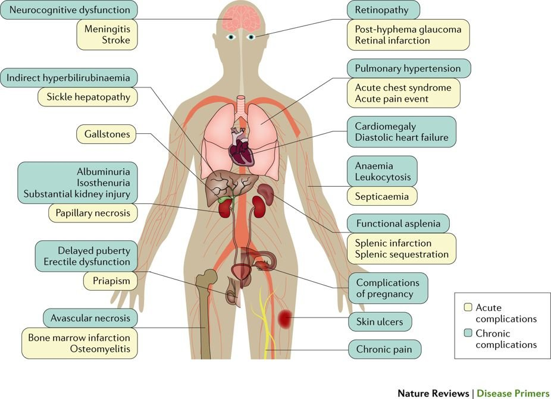
1.22 · Hemoglobin C, fetal hemoglobin and sickle cell management
Sickle cell management.
- Hemoglobin C (slide 96): a different mutation in the beta globin gene; HbC does not polymerize. Hemoglobin SC disease (sickle cell SC) combines a βC with a βS (HbSC, α2βSβC) and generally runs a course between sickle cell anemia (SCA) and sickle cell trait (SCT).
- Fetal hemoglobin (slide 97): HbF (α2γ2) is normally <1%. Some people have hereditary persistence of fetal hemoglobin (HPFH); expression varies, but 10–20% HbF seems to be a threshold for decreased severity of sickle cell disease or beta thalassemia.
- Management (slide 98):
- Disease modification: hydroxyurea raises fetal hemoglobin and reduces vaso-occlusive events.
- Red flags: fever, chest pain/hypoxemia or a new neurologic deficit need urgent assessment.
- Prevention: vaccinations, indicated childhood penicillin prophylaxis and infection education.
- Complications: transfusion/exchange for selected severe events; monitor alloimmunization and iron loading.
- Long-term: hematology follow-up, organ surveillance, consideration of curative therapies.
- Prevention and emergency care vary with age, genotype and clinical history.
- Preventing infection in sickle cell disease. Sickle cell disease brings increased susceptibility to encapsulated bacteria, so prevention is vaccinations, indicated childhood penicillin prophylaxis and infection education.
Sickle cell anemia
Defining feature: HbS polymerizes at low oxygen tension and sickles, causing vaso-occlusive pain crises and infarction; acute chest syndrome is the leading cause of death
- Definition
- A beta globin gene mutation making hemoglobin S (α2βS2), which polymerizes and sickles when oxygen is low (slide 90).
- Who gets it
- Populations along the malaria belt (sub-Saharan Africa highest); trait (HbAS) protects against severe malaria (slide 91).
- Risk factors
- Two sickle genes (both parents carriers, identified by preconception screening); reactive lung disease raises acute chest syndrome risk (slides 92, 94).
- Classic signs & symptoms
- Pain crisis (acute pain, tenderness, anxiety, tachycardia); in babies from about 5 months: failure to thrive, pain, swelling of the hands and feet, infections (slides 92–93).
- Physical exam findings
- Splenomegaly in infants; leg ulcers; priapism; retinopathy (slides 92–93).
- Diagnostics / tests
- Screening in four periods: preconception, prenatal (chorionic villus sampling), neonatal (all 50 states), post-natal (slide 92); hematocrit usually 15–30% (slide 93).
- First-line treatment
- Hydroxyurea (raises fetal hemoglobin, fewer vaso-occlusive events); vaccinations and childhood penicillin prophylaxis; urgent care for fever, chest pain/hypoxemia or neurologic deficit; transfusion/exchange for selected severe events; hematology follow-up (slide 98).
- Complications
- Acute chest syndrome (leading cause of death, >10% adult mortality); stroke (300 times the childhood risk; 25% by age 45); splenic infarct, aseptic necrosis of the femoral or humeral heads, kidney disease; encapsulated bacterial infection; iron loading and alloimmunization from transfusion (slides 93–95, 98).
Slides 90–98, 107
1.23 · Hemochromatosis: primary and secondary
Hemochromatosis treatment: therapeutic phlebotomy.
- Slide 100: iron overload, excess iron deposited throughout the body. Asymptomatic early on; over time iron deposition causes oxidative stress, fibrosis and organ dysfunction, most commonly in the liver, heart, joints, endocrine organs and skin.
- Primary: an autosomal recessive disorder of the genes that control iron absorption.
- Secondary: excessive iron supplementation, chronic liver disease, anemia.
- Signs and symptoms (slide 101): fatigue (the line is cut off on the slide); other symptoms by the organ affected: skin bronzing (face, neck, groin, extensor surfaces of the forearms and lower legs); joint pain, especially the second and third metacarpophalangeal joints and knees; cardiac: cardiomyopathy, chest pain, dyspnea on exertion.
- Clinical pearl (slide 102): iron in the pituitary causes hypogonadotropic hypogonadism: decreased libido, impotence or amenorrhea; on exam, small testes, gynecomastia, reduced body hair.
- Diagnosis (slide 103): the iron panel (see the table). Ferritin is an acute phase reactant, so look at the whole lab picture. Primary against secondary on liver biopsy with Prussian blue stain:
- Primary: iron accumulates in the liver cells (hepatocytes) with sparing of Kupffer cells until later in the disease.
- Secondary (parenteral iron overload): iron accumulates predominantly in Kupffer cells.
- Management (slide 104, guideline summary):
- Primary disease: therapeutic phlebotomy with ferritin-guided follow-up.
- Family evaluation: consider HFE testing for appropriate patients with elevated transferrin saturation (TSAT)/ferritin; offer first-degree relative screening.
- Education: avoid iron supplements and excessive alcohol; individualize dietary advice.
- Secondary overload: treat the cause; consider chelation when phlebotomy is unsuitable.
- Prognosis: early treatment can prevent organ damage; assess fibrosis and monitor cirrhosis for liver cancer.
| Iron overload cut-offs (slide 103) | Result |
|---|---|
| Ferritin <300 micrograms per liter AND transferrin saturation (TSAT) <45% | No iron overload |
| Caution | Ferritin is an acute phase reactant: interpret with the entire lab picture |
| Liver biopsy, Prussian blue stain (slide 103) | Where the iron sits |
|---|---|
| Primary hemochromatosis | Hepatic (liver cell) accumulation, Kupffer cells spared until later |
| Secondary (parenteral iron overload) | Predominantly in Kupffer cells |
Hemochromatosis (primary and secondary)
Defining feature: iron overload with fatigue, skin bronzing, second and third metacarpophalangeal joint pain, cardiomyopathy or hypogonadism; ferritin ≥300 or transferrin saturation ≥45% means overload is possible
- Definition
- Excess iron deposition causing oxidative stress, fibrosis and organ dysfunction; primary (autosomal recessive iron-absorption genes) or secondary (slide 100).
- Who gets it
- HFE hemochromatosis usually presents in adults (slide 105); first-degree relatives (slide 104).
- Risk factors
- Primary: inherited (autosomal recessive). Secondary: excessive iron supplementation, chronic liver disease, anemia (slide 100); transfusion in thalassemia (slide 89).
- Classic signs & symptoms
- Asymptomatic early; fatigue; joint pain (second and third metacarpophalangeal joints, knees); chest pain, dyspnea on exertion; decreased libido, impotence, amenorrhea (slides 100–102).
- Physical exam findings
- Skin bronzing (face, neck, groin, extensor forearms and lower legs); small testes, gynecomastia, reduced body hair (slides 101–102).
- Diagnostics / tests
- Iron panel: ferritin <300 micrograms per liter and transferrin saturation <45% = no overload (ferritin is an acute phase reactant); HFE testing; liver biopsy with Prussian blue (primary spares Kupffer cells; secondary loads them) (slides 103–104).
- First-line treatment
- Primary: therapeutic phlebotomy with ferritin-guided follow-up; secondary: treat the cause, chelation when phlebotomy is unsuitable; avoid iron supplements and excessive alcohol; screen first-degree relatives (slide 104).
- Complications
- Organ dysfunction (liver, heart, joints, endocrine, skin); cardiomyopathy; hypogonadotropic hypogonadism; fibrosis, cirrhosis and liver cancer (slides 100–104, 107).
Slides 100–105, 107
1.24 · Across the lifespan, follow-up and prognosis
The lifespan slide.
| Cytopenias across the lifespan (slide 105): population | What changes clinically / care priority |
|---|---|
| Infants | Use neonatal CBC ranges; recognize inherited anemias and abnormal newborn screens; coordinate pediatric hematology. |
| Child | Assess diet and inherited anemia; consider rare genetic or transfusion-related iron overload; use weight-based treatment. |
| Adolescent | Heavy menses: check CBC/ferritin, treat iron deficiency and control bleeding; support adherence and transition to adult care. |
| Adult | Evaluate GI/gynecologic blood loss, pregnancy and CKD; HFE hemochromatosis usually presents in adults—screen family. |
| Elderly | Check iron/B12 deficiency, CKD, drugs and marrow disorders (MDS); tailor treatment to function, comorbidities and goals. |
In the table: complete blood count (CBC), gastrointestinal (GI), chronic kidney disease (CKD), myelodysplastic syndrome (MDS), as on the slide.
| Anemia: follow-up and prognosis (slide 106): condition | Patient education / referral | Prognosis |
|---|---|---|
| Iron deficiency | Identify blood loss; reinforce iron use; GI referral if indicated. | Usually resolves once the cause and iron stores are corrected. |
| Chronic disease | Treat inflammation; monitor CBC and iron; coordinate care. | Can persist while the underlying disease is active. |
| Sideroblastic | Remove triggers; refer if cause is unclear or transfusions needed. | Variable; clonal forms may require continued follow-up. |
| Megaloblastic | Treat B12/folate deficiency; monitor neurologic recovery. | Counts improve; delayed B12 treatment may leave deficits. |
| Aplastic | Urgent hematology; infection/bleeding precautions; discuss therapy. | Depends on severity and response to treatment. |
| Renal (CKD) | Monitor Hb, iron and BP; refer for ESA or advanced CKD. | Often chronic; may improve with iron or ESA as indicated. |
Hemoglobin (Hb), blood pressure (BP), erythropoiesis-stimulating agent (ESA).
| Hemolysis & iron overload: follow-up (slide 107): condition | Patient education / referral | Prognosis |
|---|---|---|
| Sickle cell | Vaccines, fever/chest pain precautions, hematology follow-up. | Lifelong disease; prevention reduces complications. |
| Thalassemia | Hematology for severe forms; iron monitoring; genetic counseling. | Trait often mild; severe forms need lifelong monitoring. |
| G6PD deficiency | Avoid oxidative triggers; seek care for jaundice or dark urine. | Usually favorable with trigger avoidance. |
| Autoimmune hemolysis | Treat cause; monitor relapse/thrombosis; hematology care. | Relapse may occur; outcome depends on cause and response. |
| Hemochromatosis | Iron monitoring/phlebotomy; family screening; avoid excess iron. | Early care limits injury; established cirrhosis may persist. |
Population points elsewhere in the deck: infants and children — 9% of children aged 12–36 months are iron-deficient (slide 11), growth raises iron demand (slide 10), sickle cell disease presents around 5 months as HbF gives way to HbS and within the first two years (slide 92), pediatric stroke risk is 300 times higher (slide 93), childhood penicillin prophylaxis (slide 98), Fanconi anemia is diagnosed in childhood (slide 57), aplastic anemia peaks in childhood and at 20–25 (slide 55); adolescents — growth (slide 10), 2/3 of sideroblastic anemia presents in boys in childhood or adolescence (slide 30); adults — women of childbearing age 10% iron-deficient (slide 11); elderly — anemia of chronic disease (about 1 million Americans over 65, slide 24) and dietary folate deficiency (slide 42).